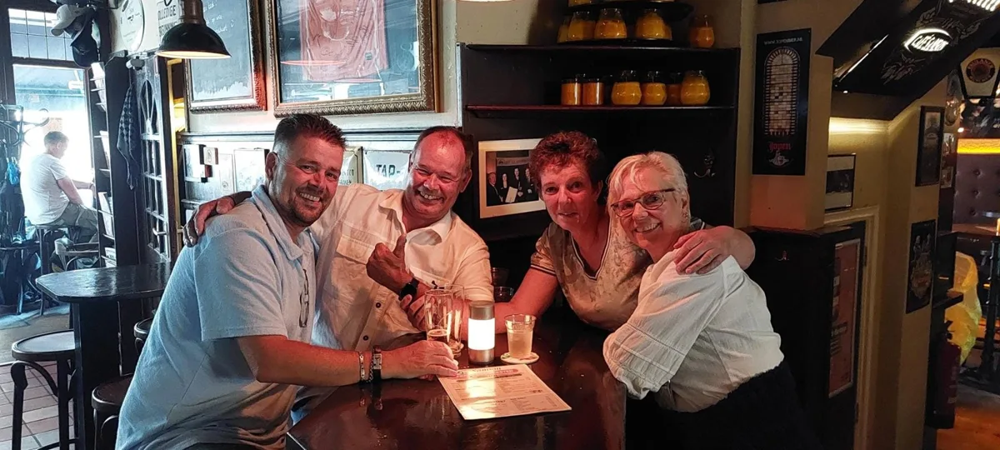

Nieuws ·
Buren uit Groesbeek ontwikkelen samen het bordspel Kaartello

Michel en Suzan Rouw en hun buren Norma en John van Baardewijk uit Groesbeek hebben samen een bordspel ontworpen. Hun spel heet Kaartello en is inmiddels via voorinschrijving te bestellen. De eerste duizend dozen vormen een genummerde, speciale editie.
De twee stellen speelden al jaren regelmatig spelletjes met elkaar, vaak Keezen. Tijdens een van die avonden ontstond het plan om zelf een spel te ontwerpen. De vier stelden spelregels op, maakten kaarten en een speelbord en lieten vrienden en kennissen proefspelen. Op basis van die reacties pasten ze het spel telkens aan.
Van hobby naar onderneming
Naarmate het spel vorm kreeg, groeide bij de makers het idee dat ook anderen er plezier aan zouden kunnen beleven. Ze richtten een eigen bedrijf op, investeerden in het project en gingen op zoek naar een manier om het spel te laten produceren.
"Het is bijzonder hoe iets wat je samen voor de lol bedenkt, uiteindelijk zo serieus wordt", aldus de makers. "Je begint met een idee aan de keukentafel en voor je het weet, ben je bezig met ontwerpen, productie en de verkoop van je eigen spel."
Kaarten aanleggen en fiches verzamelen
Kaartello is bedoeld voor drie tot zes spelers van veertien jaar en ouder. Wie meespeelt, legt kaarten aan en verzamelt fiches, met als doel de sterkste combinatie te maken. Zowel geluk als tactiek bepaalt het verloop. Spelers kunnen elkaar een handje helpen, maar ook tegenwerken om er zelf beter voor te komen te staan. De regels zijn volgens de bedenkers snel onder de knie, terwijl geen enkel potje hetzelfde verloopt. Voor hen draait het vooral om het samenzijn aan tafel.
In de eerste oplage van duizend stuks krijgt elke doos een eigen nummer en een gesigneerd certificaat.
Kaartello kost 34,95 euro en wordt verkocht op voorinschrijving. Meer informatie en bestellen via www.kaartello.nl of info@kaartello.nl.